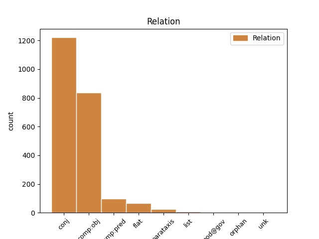
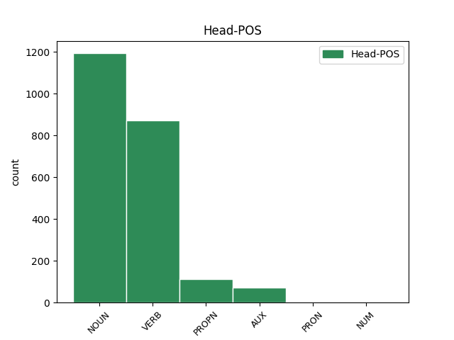
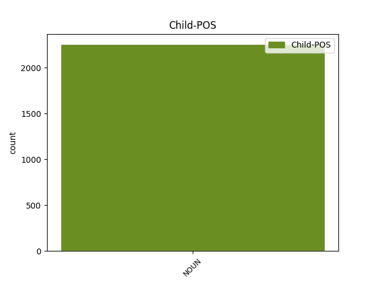

Distribution of features within this leaf



Agreement Rules sorted by frequency.
- When the dependent token is the conjunct(conj) of the head token, and the head token is NOUN and the dependent token is NOUN.
1 Ovo _ _ _ _ 0 _ _ _
2 uveliko _ _ _ _ 0 _ _ _
3 olakšava _ _ _ _ 0 _ _ _
4 deljenje _ _ _ _ 0 _ _ _
5 informacija _ _ _ _ 0 _ _ _
6 između _ _ _ _ 0 _ _ _
7 sistema sistem NOUN Ncmpg Case=Gen|Gender=Masc|Number=Plur 0 _ _ _
8 i _ _ _ _ 0 _ _ _
9 pojedinaca pojedinac NOUN Ncmpg Case=Gen|Gender=Masc|Number=Plur 7 conj _ SpaceAfter=No
10 , _ _ _ _ 0 _ _ _
11 ali _ _ _ _ 0 _ _ _
12 i _ _ _ _ 0 _ _ _
13 štetu _ _ _ _ 0 _ _ _
14 od _ _ _ _ 0 _ _ _
15 hakera _ _ _ _ 0 _ _ _
16 . _ _ _ _ 0 _ _ _
1 Ako _ _ _ _ 0 _ _ _
2 bi _ _ _ _ 0 _ _ _
3 se _ _ _ _ 0 _ _ _
4 umrežila _ _ _ _ 0 _ _ _
5 državna _ _ _ _ 0 _ _ _
6 infrastruktura _ _ _ _ 0 _ _ _
7 počev _ _ _ _ 0 _ _ _
8 od _ _ _ _ 0 _ _ _
9 uličnih _ _ _ _ 0 _ _ _
10 semafora _ _ _ _ 0 _ _ _
11 pa _ _ _ _ 0 _ _ _
12 sve _ _ _ _ 0 _ _ _
13 do _ _ _ _ 0 _ _ _
14 državnih _ _ _ _ 0 _ _ _
15 bolnica _ _ _ _ 0 _ _ _
16 , _ _ _ _ 0 _ _ _
17 to _ _ _ _ 0 _ _ _
18 bi _ _ _ _ 0 _ _ _
19 zahtevalo zahtevati VERB Vmp-sn Gender=Neut|Number=Sing|Tense=Past|VerbForm=Part|Voice=Act 0 _ _ _
20 velika _ _ _ _ 0 _ _ _
21 javna _ _ _ _ 0 _ _ _
22 ulaganja ulaganje NOUN Ncnpa Case=Acc|Gender=Neut|Number=Plur 19 comp:obj _ _
23 i _ _ _ _ 0 _ _ _
24 visokoobučene _ _ _ _ 0 _ _ _
25 kadrove _ _ _ _ 0 _ _ _
26 za _ _ _ _ 0 _ _ _
27 primenu _ _ _ _ 0 _ _ _
28 takve _ _ _ _ 0 _ _ _
29 tehnologije _ _ _ _ 0 _ _ _
30 , _ _ _ _ 0 _ _ _
31 kao _ _ _ _ 0 _ _ _
32 i _ _ _ _ 0 _ _ _
33 ulaganje _ _ _ _ 0 _ _ _
34 u _ _ _ _ 0 _ _ _
35 maksimalnu _ _ _ _ 0 _ _ _
36 zaštitu _ _ _ _ 0 _ _ _
37 ovakvih _ _ _ _ 0 _ _ _
38 osetljivih _ _ _ _ 0 _ _ _
39 sistema _ _ _ _ 0 _ _ _
40 od _ _ _ _ 0 _ _ _
41 ilegalnih _ _ _ _ 0 _ _ _
42 upada _ _ _ _ 0 _ _ _
43 i _ _ _ _ 0 _ _ _
44 sabotaže _ _ _ _ 0 _ _ _
45 . _ _ _ _ 0 _ _ _
1 Dovoljno _ _ _ _ 0 _ _ _
2 je _ _ _ _ 0 _ _ _
3 samo _ _ _ _ 0 _ _ _
4 pomenuti _ _ _ _ 0 _ _ _
5 Pod _ _ _ _ 0 _ _ _
6 vulkanom _ _ _ _ 0 _ _ _
7 Malkolma _ _ _ _ 0 _ _ _
8 Laurija _ _ _ _ 0 _ _ _
9 , _ _ _ _ 0 _ _ _
10 Zenovu _ _ _ _ 0 _ _ _
11 svest _ _ _ _ 0 _ _ _
12 Itala _ _ _ _ 0 _ _ _
13 Zveva _ _ _ _ 0 _ _ _
14 , _ _ _ _ 0 _ _ _
15 O _ _ _ _ 0 _ _ _
16 junacima _ _ _ _ 0 _ _ _
17 i _ _ _ _ 0 _ _ _
18 grobovima _ _ _ _ 0 _ _ _
19 Ernesta _ _ _ _ 0 _ _ _
20 Sabata _ _ _ _ 0 _ _ _
21 , _ _ _ _ 0 _ _ _
22 Džojsov _ _ _ _ 0 _ _ _
23 Uliks Uliks PROPN Npmsan Animacy=Inan|Case=Acc|Gender=Masc|Number=Sing 0 _ _ _
24 ili _ _ _ _ 0 _ _ _
25 Maestra maestro NOUN Ncmsay Animacy=Anim|Case=Acc|Gender=Masc|Number=Sing 23 conj _ _
26 i _ _ _ _ 0 _ _ _
27 Margaritu _ _ _ _ 0 _ _ _
28 Bulgakova _ _ _ _ 0 _ _ _
29 . _ _ _ _ 0 _ _ _
1 Štaviše _ _ _ _ 0 _ _ _
2 , _ _ _ _ 0 _ _ _
3 ovo _ _ _ _ 0 _ _ _
4 bi _ _ _ _ 0 _ _ _
5 bio biti AUX Vap-sm Gender=Masc|Number=Sing|Tense=Past|VerbForm=Part|Voice=Act 0 _ _ _
6 idealan _ _ _ _ 0 _ _ _
7 način način NOUN Ncmsn Case=Nom|Gender=Masc|Number=Sing 5 comp:pred _ _
8 da _ _ _ _ 0 _ _ _
9 se _ _ _ _ 0 _ _ _
10 izvrši _ _ _ _ 0 _ _ _
11 atentat _ _ _ _ 0 _ _ _
12 ili _ _ _ _ 0 _ _ _
13 teroristički _ _ _ _ 0 _ _ _
14 napad _ _ _ _ 0 _ _ _
15 . _ _ _ _ 0 _ _ _
1 Sam _ _ _ _ 0 _ _ _
2 izraz izraz NOUN Ncmsn Case=Nom|Gender=Masc|Number=Sing 0 _ _ _
3 Internet internet NOUN Ncmsn Case=Nom|Gender=Masc|Number=Sing 2 flat _ _
4 stvari _ _ _ _ 0 _ _ _
5 osmislio _ _ _ _ 0 _ _ _
6 je _ _ _ _ 0 _ _ _
7 1999. _ _ _ _ 0 _ _ _
8 Kevin _ _ _ _ 0 _ _ _
9 Ešton _ _ _ _ 0 _ _ _
10 , _ _ _ _ 0 _ _ _
11 inovator _ _ _ _ 0 _ _ _
12 sa _ _ _ _ 0 _ _ _
13 MIT-a _ _ _ _ 0 _ _ _
14 rođen _ _ _ _ 0 _ _ _
15 1968. _ _ _ _ 0 _ _ _
1 Pored _ _ _ _ 0 _ _ _
2 glavne _ _ _ _ 0 _ _ _
3 kancelarije _ _ _ _ 0 _ _ _
4 u _ _ _ _ 0 _ _ _
5 Sarajevu _ _ _ _ 0 _ _ _
6 , _ _ _ _ 0 _ _ _
7 OHR _ _ _ _ 0 _ _ _
8 takođe _ _ _ _ 0 _ _ _
9 ima _ _ _ _ 0 _ _ _
10 terenske _ _ _ _ 0 _ _ _
11 kancelarije _ _ _ _ 0 _ _ _
12 u _ _ _ _ 0 _ _ _
13 Banja Banja PROPN Npfsl Case=Loc|Gender=Fem|Number=Sing 0 _ _ _
14 Luci luka NOUN Ncfsl Case=Loc|Gender=Fem|Number=Sing 13 flat _ SpaceAfter=No
15 , _ _ _ _ 0 _ _ _
16 Mostaru _ _ _ _ 0 _ _ _
17 , _ _ _ _ 0 _ _ _
18 Brčkom _ _ _ _ 0 _ _ _
19 , _ _ _ _ 0 _ _ _
20 Tuzli _ _ _ _ 0 _ _ _
21 i _ _ _ _ 0 _ _ _
22 sedam _ _ _ _ 0 _ _ _
23 drugih _ _ _ _ 0 _ _ _
24 gradova _ _ _ _ 0 _ _ _
25 u _ _ _ _ 0 _ _ _
26 BiH _ _ _ _ 0 _ _ _
27 . _ _ _ _ 0 _ _ _
1 Kada _ _ _ _ 0 _ _ _
2 je _ _ _ _ 0 _ _ _
3 2010 _ _ _ _ 0 _ _ _
4 Mario _ _ _ _ 0 _ _ _
5 Vargas _ _ _ _ 0 _ _ _
6 Ljosa _ _ _ _ 0 _ _ _
7 postao postati VERB Vmp-sm Gender=Masc|Number=Sing|Tense=Past|VerbForm=Part|Voice=Act 0 _ _ _
8 dobitnik dobitnik NOUN Ncmsn Case=Nom|Gender=Masc|Number=Sing 7 comp:pred _ _
9 Nobelove _ _ _ _ 0 _ _ _
10 nagrade _ _ _ _ 0 _ _ _
11 , _ _ _ _ 0 _ _ _
12 bilo _ _ _ _ 0 _ _ _
13 je _ _ _ _ 0 _ _ _
14 onih _ _ _ _ 0 _ _ _
15 koji _ _ _ _ 0 _ _ _
16 su _ _ _ _ 0 _ _ _
17 pomislili _ _ _ _ 0 _ _ _
18 da _ _ _ _ 0 _ _ _
19 će _ _ _ _ 0 _ _ _
20 slavni _ _ _ _ 0 _ _ _
21 pisac _ _ _ _ 0 _ _ _
22 smanjiti _ _ _ _ 0 _ _ _
23 produkciju _ _ _ _ 0 _ _ _
24 . _ _ _ _ 0 _ _ _
1 Diplomatski _ _ _ _ 0 _ _ _
2 dnevnik dnevnik NOUN Ncmsn Case=Nom|Gender=Masc|Number=Sing 6 parataxis _ SpaceAfter=No
3 : _ _ _ _ 0 _ _ _
4 Saudijski _ _ _ _ 0 _ _ _
5 kralj _ _ _ _ 0 _ _ _
6 posetio posetiti VERB Vmp-sm Gender=Masc|Number=Sing|Tense=Past|VerbForm=Part|Voice=Act 0 _ _ _
7 Tursku _ _ _ _ 0 _ _ _
1 Podsekretar _ _ _ _ 0 _ _ _
2 američkog _ _ _ _ 0 _ _ _
3 Stejt _ _ _ _ 0 _ _ _
4 departmenta _ _ _ _ 0 _ _ _
5 Mark _ _ _ _ 0 _ _ _
6 Grosman _ _ _ _ 0 _ _ _
7 sastao _ _ _ _ 0 _ _ _
8 se _ _ _ _ 0 _ _ _
9 u _ _ _ _ 0 _ _ _
10 četvrtak _ _ _ _ 0 _ _ _
11 sa _ _ _ _ 0 _ _ _
12 zvaničnicima _ _ _ _ 0 _ _ _
13 Srbije _ _ _ _ 0 _ _ _
14 i _ _ _ _ 0 _ _ _
15 Crne _ _ _ _ 0 _ _ _
16 Gore _ _ _ _ 0 _ _ _
17 , _ _ _ _ 0 _ _ _
18 ukazujući _ _ _ _ 0 _ _ _
19 da _ _ _ _ 0 _ _ _
20 dalji _ _ _ _ 0 _ _ _
21 napredak _ _ _ _ 0 _ _ _
22 zemlje _ _ _ _ 0 _ _ _
23 zavisi _ _ _ _ 0 _ _ _
24 od _ _ _ _ 0 _ _ _
25 ispunjenja _ _ _ _ 0 _ _ _
26 njenih _ _ _ _ 0 _ _ _
27 međunarodnih _ _ _ _ 0 _ _ _
28 obaveza obaveza NOUN Ncfpg Case=Gen|Gender=Fem|Number=Plur 0 _ _ _
29 , _ _ _ _ 0 _ _ _
30 pre _ _ _ _ 0 _ _ _
31 svega _ _ _ _ 0 _ _ _
32 saradnje saradnja NOUN Ncfsg Case=Gen|Gender=Fem|Number=Sing 28 parataxis _ _
33 sa _ _ _ _ 0 _ _ _
34 MKSJ _ _ _ _ 0 _ _ _
35 . _ _ _ _ 0 _ _ _
1 Preko _ _ _ _ 0 _ _ _
2 dve dva NUM Mlcf-n Case=Nom|Gender=Fem|Number=Plur|NumType=Card 0 _ _ _
3 trećine trećina NOUN Ncfsg Case=Gen|Gender=Fem|Number=Sing 2 flat _ _
4 Grka _ _ _ _ 0 _ _ _
5 kaže _ _ _ _ 0 _ _ _
6 da _ _ _ _ 0 _ _ _
7 je _ _ _ _ 0 _ _ _
8 osiromašilo _ _ _ _ 0 _ _ _
9 , _ _ _ _ 0 _ _ _
10 a _ _ _ _ 0 _ _ _
11 slični _ _ _ _ 0 _ _ _
12 rezultati _ _ _ _ 0 _ _ _
13 zabeleženi _ _ _ _ 0 _ _ _
14 su _ _ _ _ 0 _ _ _
15 i _ _ _ _ 0 _ _ _
16 u _ _ _ _ 0 _ _ _
17 susednim _ _ _ _ 0 _ _ _
18 zemljama _ _ _ _ 0 _ _ _
19 . _ _ _ _ 0 _ _ _
1 Za _ _ _ _ 0 _ _ _
2 mene _ _ _ _ 0 _ _ _
3 grad _ _ _ _ 0 _ _ _
4 Madrid _ _ _ _ 0 _ _ _
5 predstavlja _ _ _ _ 0 _ _ _
6 simbol _ _ _ _ 0 _ _ _
7 mnogih _ _ _ _ 0 _ _ _
8 stvari _ _ _ _ 0 _ _ _
9 -- _ _ _ _ 0 _ _ _
10 mladosti mladost NOUN Ncfsg Case=Gen|Gender=Fem|Number=Sing 0 _ _ _
11 , _ _ _ _ 0 _ _ _
12 doma _ _ _ _ 0 _ _ _
13 , _ _ _ _ 0 _ _ _
14 porodice porodica NOUN Ncfsg Case=Gen|Gender=Fem|Number=Sing 10 list _ _
15 i _ _ _ _ 0 _ _ _
16 prijateljstva _ _ _ _ 0 _ _ _
17 " _ _ _ _ 0 _ _ _
18 , _ _ _ _ 0 _ _ _
19 rekao _ _ _ _ 0 _ _ _
20 je _ _ _ _ 0 _ _ _
21 bugarski _ _ _ _ 0 _ _ _
22 lider _ _ _ _ 0 _ _ _
23 primajući _ _ _ _ 0 _ _ _
24 nagradu _ _ _ _ 0 _ _ _
25 . _ _ _ _ 0 _ _ _
1 Knjige knjiga NOUN Ncfpn Case=Nom|Gender=Fem|Number=Plur 0 _ _ _
2 - _ _ _ _ 0 _ _ _
3 plovidbe plovidba NOUN Ncfpn Case=Nom|Gender=Fem|Number=Plur 1 orphan _ _
1 Mario Mario PROPN Npmsn Case=Nom|Gender=Masc|Number=Sing 0 _ _ _
2 Vargas _ _ _ _ 0 _ _ _
3 Ljosa _ _ _ _ 0 _ _ _
4 : _ _ _ _ 0 _ _ _
5 Diskretni _ _ _ _ 0 _ _ _
6 heroj heroj NOUN Ncmsn Case=Nom|Gender=Masc|Number=Sing 1 parataxis _ _
1 Neka _ _ _ _ 0 _ _ _
2 ona on PRON Pp3fsn Case=Nom|Gender=Fem|Number=Sing|Person=3|PronType=Prs 0 _ _ _
3 [ _ _ _ _ 0 _ _ _
4 vlada vlada NOUN Ncfsn Case=Nom|Gender=Fem|Number=Sing 2 parataxis _ SpaceAfter=No
5 ] _ _ _ _ 0 _ _ _
6 nastavi _ _ _ _ 0 _ _ _
7 da _ _ _ _ 0 _ _ _
8 traži _ _ _ _ 0 _ _ _
9 pojas _ _ _ _ 0 _ _ _
10 za _ _ _ _ 0 _ _ _
11 spasavanje _ _ _ _ 0 _ _ _
12 zbog _ _ _ _ 0 _ _ _
13 sopstvene _ _ _ _ 0 _ _ _
14 nekompetentnosti _ _ _ _ 0 _ _ _
15 i _ _ _ _ 0 _ _ _
16 neefektivnosti _ _ _ _ 0 _ _ _
17 " _ _ _ _ 0 _ _ _
18 , _ _ _ _ 0 _ _ _
19 rekao _ _ _ _ 0 _ _ _
20 je _ _ _ _ 0 _ _ _
21 portparol _ _ _ _ 0 _ _ _
22 ND _ _ _ _ 0 _ _ _
23 Janis _ _ _ _ 0 _ _ _
24 Mihelakis _ _ _ _ 0 _ _ _
25 30. _ _ _ _ 0 _ _ _
26 avgusta _ _ _ _ 0 _ _ _
27 . _ _ _ _ 0 _ _ _
1 Kreditni _ _ _ _ 0 _ _ _
2 uslovi _ _ _ _ 0 _ _ _
3 predviđaju _ _ _ _ 0 _ _ _
4 rok rok NOUN Ncmsan Animacy=Inan|Case=Acc|Gender=Masc|Number=Sing 12 comp:pred _ _
5 otplate _ _ _ _ 0 _ _ _
6 od _ _ _ _ 0 _ _ _
7 petnaest _ _ _ _ 0 _ _ _
8 godina _ _ _ _ 0 _ _ _
9 , _ _ _ _ 0 _ _ _
10 trogodišnji _ _ _ _ 0 _ _ _
11 grejs _ _ _ _ 0 _ _ _
12 period period NOUN Ncmsan Animacy=Inan|Case=Acc|Gender=Masc|Number=Sing 0 _ _ _
13 i _ _ _ _ 0 _ _ _
14 kamatnu _ _ _ _ 0 _ _ _
15 stopu _ _ _ _ 0 _ _ _
16 od _ _ _ _ 0 _ _ _
17 2,7 _ _ _ _ 0 _ _ _
18 odsto _ _ _ _ 0 _ _ _
19 . _ _ _ _ 0 _ _ _
1 Tihić _ _ _ _ 0 _ _ _
2 je _ _ _ _ 0 _ _ _
3 izjavio _ _ _ _ 0 _ _ _
4 dnevniku _ _ _ _ 0 _ _ _
5 Dnevni _ _ _ _ 0 _ _ _
6 avaz _ _ _ _ 0 _ _ _
7 da _ _ _ _ 0 _ _ _
8 će _ _ _ _ 0 _ _ _
9 komisija _ _ _ _ 0 _ _ _
10 i _ _ _ _ 0 _ _ _
11 stranački _ _ _ _ 0 _ _ _
12 lideri _ _ _ _ 0 _ _ _
13 izraditi _ _ _ _ 0 _ _ _
14 mapu _ _ _ _ 0 _ _ _
15 u _ _ _ _ 0 _ _ _
16 sklopu _ _ _ _ 0 _ _ _
17 predloženih _ _ _ _ 0 _ _ _
18 ustavnih _ _ _ _ 0 _ _ _
19 reformi _ _ _ _ 0 _ _ _
20 zasnovanih _ _ _ _ 0 _ _ _
21 na _ _ _ _ 0 _ _ _
22 sporazumu _ _ _ _ 0 _ _ _
23 između _ _ _ _ 0 _ _ _
24 njega on PRON Pp3msg Case=Gen|Gender=Masc|Number=Sing|Person=3|PronType=Prs 0 _ _ _
25 , _ _ _ _ 0 _ _ _
26 lidera lider NOUN Ncmsg Case=Gen|Gender=Masc|Number=Sing 24 conj _ _
27 Hrvatske _ _ _ _ 0 _ _ _
28 demokratske _ _ _ _ 0 _ _ _
29 zajednice _ _ _ _ 0 _ _ _
30 BiH _ _ _ _ 0 _ _ _
31 Dragana _ _ _ _ 0 _ _ _
32 Čovića _ _ _ _ 0 _ _ _
33 i _ _ _ _ 0 _ _ _
34 premijera _ _ _ _ 0 _ _ _
35 Republike _ _ _ _ 0 _ _ _
36 Srpske _ _ _ _ 0 _ _ _
37 ( _ _ _ _ 0 _ _ _
38 RS _ _ _ _ 0 _ _ _
39 ) _ _ _ _ 0 _ _ _
40 Milorada _ _ _ _ 0 _ _ _
41 Dodika _ _ _ _ 0 _ _ _
42 , _ _ _ _ 0 _ _ _
43 koji _ _ _ _ 0 _ _ _
44 je _ _ _ _ 0 _ _ _
45 na _ _ _ _ 0 _ _ _
46 čelu _ _ _ _ 0 _ _ _
47 Saveza _ _ _ _ 0 _ _ _
48 nezavisnih _ _ _ _ 0 _ _ _
49 socijaldemokrata _ _ _ _ 0 _ _ _
50 . _ _ _ _ 0 _ _ _
1 " _ _ _ _ 0 _ _ _
2 Nije _ _ _ _ 0 _ _ _
3 bilo biti AUX Vap-sn Gender=Neut|Number=Sing|Tense=Past|VerbForm=Part|Voice=Act 0 _ _ _
4 ekstremnog _ _ _ _ 0 _ _ _
5 siromaštva siromaštvo NOUN Ncnsg Case=Gen|Gender=Neut|Number=Sing 3 comp:obj _ SpaceAfter=No
6 , _ _ _ _ 0 _ _ _
7 nije _ _ _ _ 0 _ _ _
8 bilo _ _ _ _ 0 _ _ _
9 droga _ _ _ _ 0 _ _ _
10 , _ _ _ _ 0 _ _ _
11 bilo _ _ _ _ 0 _ _ _
12 je _ _ _ _ 0 _ _ _
13 mnogo _ _ _ _ 0 _ _ _
14 manje _ _ _ _ 0 _ _ _
15 kriminala _ _ _ _ 0 _ _ _
16 i _ _ _ _ 0 _ _ _
17 više _ _ _ _ 0 _ _ _
18 radnih _ _ _ _ 0 _ _ _
19 mesta _ _ _ _ 0 _ _ _
20 . _ _ _ _ 0 _ _ _
1 Takođe _ _ _ _ 0 _ _ _
2 u _ _ _ _ 0 _ _ _
3 vestima _ _ _ _ 0 _ _ _
4 iz _ _ _ _ 0 _ _ _
5 kulture _ _ _ _ 0 _ _ _
6 : _ _ _ _ 0 _ _ _
7 Istanbul _ _ _ _ 0 _ _ _
8 domaćin _ _ _ _ 0 _ _ _
9 37. _ _ _ _ 0 _ _ _
10 Međunarodnog _ _ _ _ 0 _ _ _
11 muzičkog _ _ _ _ 0 _ _ _
12 festivala festival NOUN Ncmsg Case=Gen|Gender=Masc|Number=Sing 18 unk _ SpaceAfter=No
13 , _ _ _ _ 0 _ _ _
14 a _ _ _ _ 0 _ _ _
15 Kipar _ _ _ _ 0 _ _ _
16 i _ _ _ _ 0 _ _ _
17 Grčka _ _ _ _ 0 _ _ _
18 potpisali potpisati VERB Vmp-pm Gender=Masc|Number=Plur|Tense=Past|VerbForm=Part|Voice=Act 0 _ _ _
19 sporazum _ _ _ _ 0 _ _ _
20 o _ _ _ _ 0 _ _ _
21 saradnji _ _ _ _ 0 _ _ _
22 . _ _ _ _ 0 _ _ _
1 Takođe _ _ _ _ 0 _ _ _
2 u _ _ _ _ 0 _ _ _
3 poslovnim _ _ _ _ 0 _ _ _
4 vestima _ _ _ _ 0 _ _ _
5 : _ _ _ _ 0 _ _ _
6 Ekonomska _ _ _ _ 0 _ _ _
7 inicijativa _ _ _ _ 0 _ _ _
8 za _ _ _ _ 0 _ _ _
9 Kosovo _ _ _ _ 0 _ _ _
10 i _ _ _ _ 0 _ _ _
11 Američka _ _ _ _ 0 _ _ _
12 privredna _ _ _ _ 0 _ _ _
13 komora _ _ _ _ 0 _ _ _
14 na _ _ _ _ 0 _ _ _
15 Kosovu _ _ _ _ 0 _ _ _
16 potpisali potpisati VERB Vmp-pm Gender=Masc|Number=Plur|Tense=Past|VerbForm=Part|Voice=Act 0 _ _ _
17 pakt _ _ _ _ 0 _ _ _
18 , _ _ _ _ 0 _ _ _
19 a _ _ _ _ 0 _ _ _
20 Skoplje _ _ _ _ 0 _ _ _
21 domaćin domaćin NOUN Ncmsn Case=Nom|Gender=Masc|Number=Sing 16 conj _ _
22 Globalne _ _ _ _ 0 _ _ _
23 nedelje _ _ _ _ 0 _ _ _
24 preduzetništva _ _ _ _ 0 _ _ _
25 . _ _ _ _ 0 _ _ _
1 Serotonin _ _ _ _ 0 _ _ _
2 , _ _ _ _ 0 _ _ _
3 hormon _ _ _ _ 0 _ _ _
4 koga _ _ _ _ 0 _ _ _
5 luči _ _ _ _ 0 _ _ _
6 nekoliko _ _ _ _ 0 _ _ _
7 stotina stotina NOUN Ncfpg Case=Gen|Gender=Fem|Number=Plur 8 mod@gov _ _
8 hiljada hiljada NOUN Ncfpg Case=Gen|Gender=Fem|Number=Plur 0 _ _ _
9 neurona _ _ _ _ 0 _ _ _
10 srednjeg _ _ _ _ 0 _ _ _
11 mozga _ _ _ _ 0 _ _ _
12 , _ _ _ _ 0 _ _ _
13 naziva _ _ _ _ 0 _ _ _
14 se _ _ _ _ 0 _ _ _
15 ponekad _ _ _ _ 0 _ _ _
16 i _ _ _ _ 0 _ _ _
17 hormonom _ _ _ _ 0 _ _ _
18 sreće _ _ _ _ 0 _ _ _
19 . _ _ _ _ 0 _ _ _
Disagree Examples:
1 Medijski _ _ _ _ 0 _ _ _
2 mogul _ _ _ _ 0 _ _ _
3 Velija _ _ _ _ 0 _ _ _
4 Ramkovski _ _ _ _ 0 _ _ _
5 osuđen _ _ _ _ 0 _ _ _
6 je _ _ _ _ 0 _ _ _
7 na _ _ _ _ 0 _ _ _
8 13 _ _ _ _ 0 _ _ _
9 godina _ _ _ _ 0 _ _ _
10 zatvora _ _ _ _ 0 _ _ _
11 zbog _ _ _ _ 0 _ _ _
12 utaje utaja NOUN Ncfsg Case=Gen|Gender=Fem|Number=Sing 0 _ _ _
13 poreza _ _ _ _ 0 _ _ _
14 i _ _ _ _ 0 _ _ _
15 pranja pranje NOUN Ncnsg Case=Gen|Gender=Neut|Number=Sing 12 conj _ _
16 novca _ _ _ _ 0 _ _ _
17 . _ _ _ _ 0 _ _ _
1 Krivična _ _ _ _ 0 _ _ _
2 presuda _ _ _ _ 0 _ _ _
3 i _ _ _ _ 0 _ _ _
4 zatvorska _ _ _ _ 0 _ _ _
5 kazna _ _ _ _ 0 _ _ _
6 medijskom _ _ _ _ 0 _ _ _
7 mogulu _ _ _ _ 0 _ _ _
8 Veliji _ _ _ _ 0 _ _ _
9 Ramkovskom _ _ _ _ 0 _ _ _
10 , _ _ _ _ 0 _ _ _
11 koji _ _ _ _ 0 _ _ _
12 je _ _ _ _ 0 _ _ _
13 često _ _ _ _ 0 _ _ _
14 kritikovao kritikovati VERB Vmp-sm Gender=Masc|Number=Sing|Tense=Past|VerbForm=Part|Voice=Act 0 _ _ _
15 makedonsku _ _ _ _ 0 _ _ _
16 vladu vlada NOUN Ncfsa Case=Acc|Gender=Fem|Number=Sing 14 comp:obj _ SpaceAfter=No
17 , _ _ _ _ 0 _ _ _
18 mogla _ _ _ _ 0 _ _ _
19 bi _ _ _ _ 0 _ _ _
20 da _ _ _ _ 0 _ _ _
21 zaplaši _ _ _ _ 0 _ _ _
22 medije _ _ _ _ 0 _ _ _
23 , _ _ _ _ 0 _ _ _
24 kažu _ _ _ _ 0 _ _ _
25 novinari _ _ _ _ 0 _ _ _
26 u _ _ _ _ 0 _ _ _
27 toj _ _ _ _ 0 _ _ _
28 maloj _ _ _ _ 0 _ _ _
29 balkanskoj _ _ _ _ 0 _ _ _
30 državi _ _ _ _ 0 _ _ _
31 . _ _ _ _ 0 _ _ _
1 Ramkovski _ _ _ _ 0 _ _ _
2 , _ _ _ _ 0 _ _ _
3 bivši _ _ _ _ 0 _ _ _
4 vlasnik _ _ _ _ 0 _ _ _
5 televizijske _ _ _ _ 0 _ _ _
6 stanice _ _ _ _ 0 _ _ _
7 A1 _ _ _ _ 0 _ _ _
8 , _ _ _ _ 0 _ _ _
9 četiri _ _ _ _ 0 _ _ _
10 novine novina NOUN Ncfpn Case=Nom|Gender=Fem|Number=Plur 0 _ _ _
11 i _ _ _ _ 0 _ _ _
12 drugih _ _ _ _ 0 _ _ _
13 preduzeća preduzeće NOUN Ncnpg Case=Gen|Gender=Neut|Number=Plur 10 conj _ SpaceAfter=No
14 , _ _ _ _ 0 _ _ _
15 osuđen _ _ _ _ 0 _ _ _
16 je _ _ _ _ 0 _ _ _
17 u _ _ _ _ 0 _ _ _
18 krivičnom _ _ _ _ 0 _ _ _
19 sudu _ _ _ _ 0 _ _ _
20 u _ _ _ _ 0 _ _ _
21 Skoplju _ _ _ _ 0 _ _ _
22 14. _ _ _ _ 0 _ _ _
23 marta _ _ _ _ 0 _ _ _
24 na _ _ _ _ 0 _ _ _
25 13 _ _ _ _ 0 _ _ _
26 godina _ _ _ _ 0 _ _ _
27 zatvora _ _ _ _ 0 _ _ _
28 , _ _ _ _ 0 _ _ _
29 zbog _ _ _ _ 0 _ _ _
30 pranja _ _ _ _ 0 _ _ _
31 novca _ _ _ _ 0 _ _ _
32 , _ _ _ _ 0 _ _ _
33 kriminalne _ _ _ _ 0 _ _ _
34 zavere _ _ _ _ 0 _ _ _
35 , _ _ _ _ 0 _ _ _
36 zloupotrebe _ _ _ _ 0 _ _ _
37 položaja _ _ _ _ 0 _ _ _
38 i _ _ _ _ 0 _ _ _
39 utaje _ _ _ _ 0 _ _ _
40 poreza _ _ _ _ 0 _ _ _
41 ; _ _ _ _ 0 _ _ _
42 19 _ _ _ _ 0 _ _ _
43 saučesnika _ _ _ _ 0 _ _ _
44 dobilo _ _ _ _ 0 _ _ _
45 je _ _ _ _ 0 _ _ _
46 zatvorske _ _ _ _ 0 _ _ _
47 kazne _ _ _ _ 0 _ _ _
48 u _ _ _ _ 0 _ _ _
49 trajanju _ _ _ _ 0 _ _ _
50 dve _ _ _ _ 0 _ _ _
51 do _ _ _ _ 0 _ _ _
52 sedam _ _ _ _ 0 _ _ _
53 godina _ _ _ _ 0 _ _ _
54 . _ _ _ _ 0 _ _ _
1 Ramkovski _ _ _ _ 0 _ _ _
2 , _ _ _ _ 0 _ _ _
3 bivši _ _ _ _ 0 _ _ _
4 vlasnik _ _ _ _ 0 _ _ _
5 televizijske _ _ _ _ 0 _ _ _
6 stanice _ _ _ _ 0 _ _ _
7 A1 _ _ _ _ 0 _ _ _
8 , _ _ _ _ 0 _ _ _
9 četiri _ _ _ _ 0 _ _ _
10 novine _ _ _ _ 0 _ _ _
11 i _ _ _ _ 0 _ _ _
12 drugih _ _ _ _ 0 _ _ _
13 preduzeća _ _ _ _ 0 _ _ _
14 , _ _ _ _ 0 _ _ _
15 osuđen _ _ _ _ 0 _ _ _
16 je _ _ _ _ 0 _ _ _
17 u _ _ _ _ 0 _ _ _
18 krivičnom _ _ _ _ 0 _ _ _
19 sudu _ _ _ _ 0 _ _ _
20 u _ _ _ _ 0 _ _ _
21 Skoplju _ _ _ _ 0 _ _ _
22 14. _ _ _ _ 0 _ _ _
23 marta _ _ _ _ 0 _ _ _
24 na _ _ _ _ 0 _ _ _
25 13 _ _ _ _ 0 _ _ _
26 godina _ _ _ _ 0 _ _ _
27 zatvora _ _ _ _ 0 _ _ _
28 , _ _ _ _ 0 _ _ _
29 zbog _ _ _ _ 0 _ _ _
30 pranja pranje NOUN Ncnsg Case=Gen|Gender=Neut|Number=Sing 0 _ _ _
31 novca _ _ _ _ 0 _ _ _
32 , _ _ _ _ 0 _ _ _
33 kriminalne _ _ _ _ 0 _ _ _
34 zavere zavera NOUN Ncfsg Case=Gen|Gender=Fem|Number=Sing 30 conj _ SpaceAfter=No
35 , _ _ _ _ 0 _ _ _
36 zloupotrebe _ _ _ _ 0 _ _ _
37 položaja _ _ _ _ 0 _ _ _
38 i _ _ _ _ 0 _ _ _
39 utaje _ _ _ _ 0 _ _ _
40 poreza _ _ _ _ 0 _ _ _
41 ; _ _ _ _ 0 _ _ _
42 19 _ _ _ _ 0 _ _ _
43 saučesnika _ _ _ _ 0 _ _ _
44 dobilo _ _ _ _ 0 _ _ _
45 je _ _ _ _ 0 _ _ _
46 zatvorske _ _ _ _ 0 _ _ _
47 kazne _ _ _ _ 0 _ _ _
48 u _ _ _ _ 0 _ _ _
49 trajanju _ _ _ _ 0 _ _ _
50 dve _ _ _ _ 0 _ _ _
51 do _ _ _ _ 0 _ _ _
52 sedam _ _ _ _ 0 _ _ _
53 godina _ _ _ _ 0 _ _ _
54 . _ _ _ _ 0 _ _ _
1 Ramkovski _ _ _ _ 0 _ _ _
2 , _ _ _ _ 0 _ _ _
3 bivši _ _ _ _ 0 _ _ _
4 vlasnik _ _ _ _ 0 _ _ _
5 televizijske _ _ _ _ 0 _ _ _
6 stanice _ _ _ _ 0 _ _ _
7 A1 _ _ _ _ 0 _ _ _
8 , _ _ _ _ 0 _ _ _
9 četiri _ _ _ _ 0 _ _ _
10 novine _ _ _ _ 0 _ _ _
11 i _ _ _ _ 0 _ _ _
12 drugih _ _ _ _ 0 _ _ _
13 preduzeća _ _ _ _ 0 _ _ _
14 , _ _ _ _ 0 _ _ _
15 osuđen _ _ _ _ 0 _ _ _
16 je _ _ _ _ 0 _ _ _
17 u _ _ _ _ 0 _ _ _
18 krivičnom _ _ _ _ 0 _ _ _
19 sudu _ _ _ _ 0 _ _ _
20 u _ _ _ _ 0 _ _ _
21 Skoplju _ _ _ _ 0 _ _ _
22 14. _ _ _ _ 0 _ _ _
23 marta _ _ _ _ 0 _ _ _
24 na _ _ _ _ 0 _ _ _
25 13 _ _ _ _ 0 _ _ _
26 godina _ _ _ _ 0 _ _ _
27 zatvora _ _ _ _ 0 _ _ _
28 , _ _ _ _ 0 _ _ _
29 zbog _ _ _ _ 0 _ _ _
30 pranja _ _ _ _ 0 _ _ _
31 novca _ _ _ _ 0 _ _ _
32 , _ _ _ _ 0 _ _ _
33 kriminalne _ _ _ _ 0 _ _ _
34 zavere _ _ _ _ 0 _ _ _
35 , _ _ _ _ 0 _ _ _
36 zloupotrebe _ _ _ _ 0 _ _ _
37 položaja _ _ _ _ 0 _ _ _
38 i _ _ _ _ 0 _ _ _
39 utaje _ _ _ _ 0 _ _ _
40 poreza _ _ _ _ 0 _ _ _
41 ; _ _ _ _ 0 _ _ _
42 19 _ _ _ _ 0 _ _ _
43 saučesnika _ _ _ _ 0 _ _ _
44 dobilo dobiti VERB Vmp-sn Gender=Neut|Number=Sing|Tense=Past|VerbForm=Part|Voice=Act 0 _ _ _
45 je _ _ _ _ 0 _ _ _
46 zatvorske _ _ _ _ 0 _ _ _
47 kazne kazna NOUN Ncfpa Case=Acc|Gender=Fem|Number=Plur 44 comp:obj _ _
48 u _ _ _ _ 0 _ _ _
49 trajanju _ _ _ _ 0 _ _ _
50 dve _ _ _ _ 0 _ _ _
51 do _ _ _ _ 0 _ _ _
52 sedam _ _ _ _ 0 _ _ _
53 godina _ _ _ _ 0 _ _ _
54 . _ _ _ _ 0 _ _ _